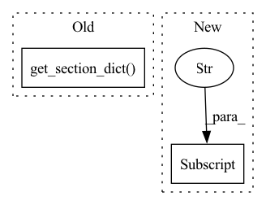

Pattern ID :21358
Before Change
// Some vars are only used to pass through to mail service/ Maybe this could be refactored.
def check_violations(threshold, config, source_name, camera_id, interval, should_send_email, should_send_slack):
log_dir = config.get_section_dict("Logger")["LogDirectory"]
camera_name = config.get_section_dict( source_name) ["Name"]
logger = logging.getLogger(__name__)
today = str(date.today())
file_path = os.path.join(log_dir, camera_id, "objects_log", today + ".csv")After Change
file_paths = [os.path.join(log_dir, entity_info["id"], "objects_log", today + ".csv")]
else:
// entity_type == "Area"
camera_ids = entity_info["cameras"]
file_paths = [os.path.join(log_dir, camera_id, "objects_log", today + ".csv") for camera_id in camera_ids]
for file_path in file_paths:
violations += get_violations(file_path, interval)In pattern: SUPERPATTERN
Frequency: 3
Non-data size: 2
Instances Fragment ID: 68179844
Project Name: neuralet/smart-social-distancing
Commit Name: cc83a5359249689566aff454deb74f361ee3c432
Time: 2020-10-23
Author: 42361379+renzodgc@users.noreply.github.com
File Name: libs/utils/notifications.py
M Class Name: AnonimousClass
N Class Name: AnonimousClass
M Method Name: check_violations(7)
N Method Name: check_violations(7)
M Parent Class:
N Parent Class:
M File Name: libs/utils/notifications.py
N File Name: libs/utils/notifications.py
M Start Line: 11
M End Line: 32
N Start Line: 23
N End Line: 46
Before Change
self.send_source_notification(source_info, subject, html_string)
def send_daily_report(self, source_name, num_violations, hours_sumary):
source_info = self.config.get_section_dict( source_name)
frontend_url = self.config.get_section_dict("App")["DashboardURL"]
with codecs.open("libs/utils/mail_daily_report.html", "r") as f:
html_string = f.read()
html_string = html_string.replace("{detections}", str(num_violations))After Change
self.send_email_notification(entity_info, subject, html_string)
def send_daily_report(self, entity_info, num_violations, hours_sumary):
entity_type = entity_info["type"]
frontend_url = self.config.get_section_dict("App")["DashboardURL"]
with codecs.open("libs/utils/mail_daily_report.html", "r") as f:
html_string = f.read()
html_string = html_string.replace("{detections}", str(num_violations)) Fragment ID: 68179846
Project Name: neuralet/smart-social-distancing
Commit Name: cc83a5359249689566aff454deb74f361ee3c432
Time: 2020-10-23
Author: 42361379+renzodgc@users.noreply.github.com
File Name: libs/utils/mailing.py
M Class Name: MailService
N Class Name: MailService
M Method Name: send_daily_report(4)
N Method Name: send_daily_report(4)
M Parent Class:
N Parent Class:
M File Name: libs/utils/mailing.py
N File Name: libs/utils/mailing.py
M Start Line: 48
M End Line: 60
N Start Line: 49
N End Line: 62
Before Change
self.logger.info(f"Sent notification email to {to}")
def send_violation_notification(self, source_name, num_violations):
source_info = self.config.get_section_dict( source_name)
frontend_url = self.config.get_section_dict("App")["DashboardURL"]
with codecs.open("libs/utils/mail_violations_notification.html", "r") as f:
html_string = f.read()
html_string = html_string.replace("{detections}", str(num_violations))After Change
self.logger.info(f"Sent notification email to {to}")
def send_violation_notification(self, entity_info, num_violations):
entity_type = entity_info["type"]
frontend_url = self.config.get_section_dict("App")["DashboardURL"]
with codecs.open("libs/utils/mail_violations_notification.html", "r") as f:
html_string = f.read()
html_string = html_string.replace("{detections}", str(num_violations)) Fragment ID: 68179847
Project Name: neuralet/smart-social-distancing
Commit Name: cc83a5359249689566aff454deb74f361ee3c432
Time: 2020-10-23
Author: 42361379+renzodgc@users.noreply.github.com
File Name: libs/utils/mailing.py
M Class Name: MailService
N Class Name: MailService
M Method Name: send_violation_notification(3)
N Method Name: send_violation_notification(3)
M Parent Class:
N Parent Class:
M File Name: libs/utils/mailing.py
N File Name: libs/utils/mailing.py
M Start Line: 36
M End Line: 45
N Start Line: 36
N End Line: 46